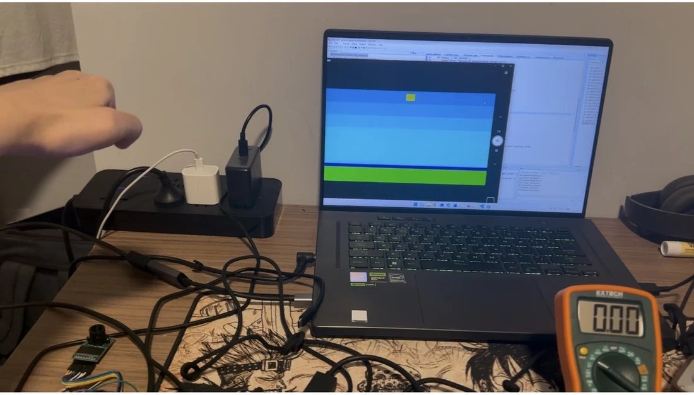
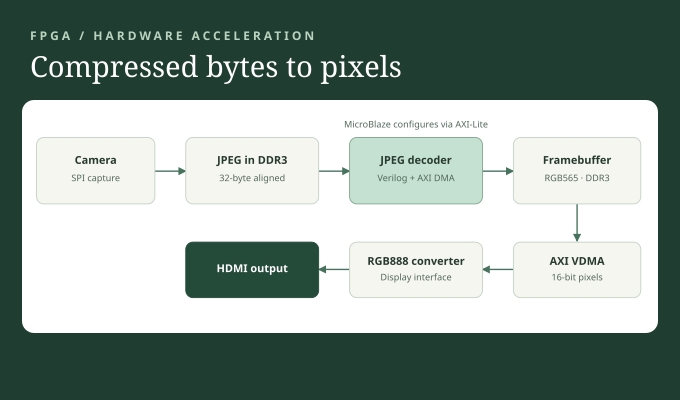
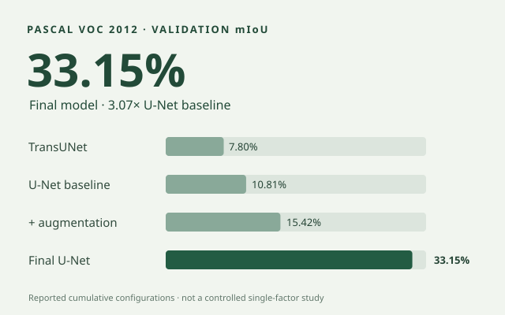
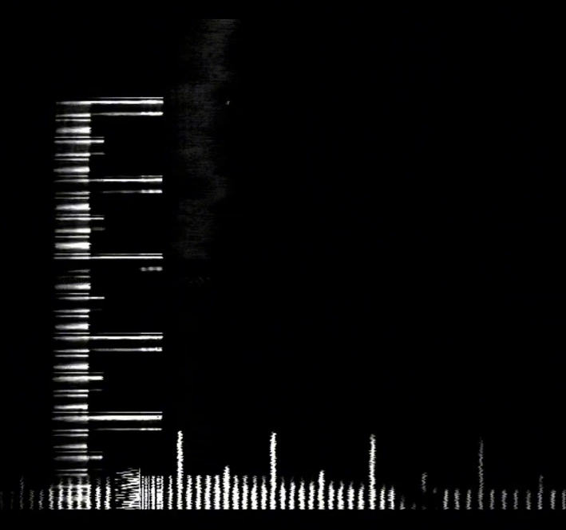
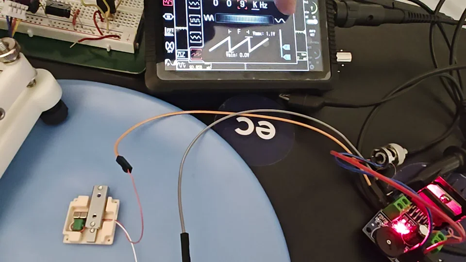
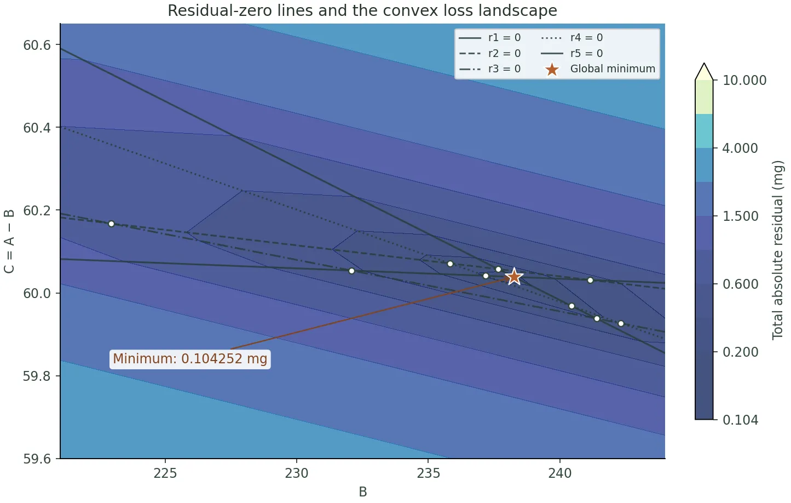
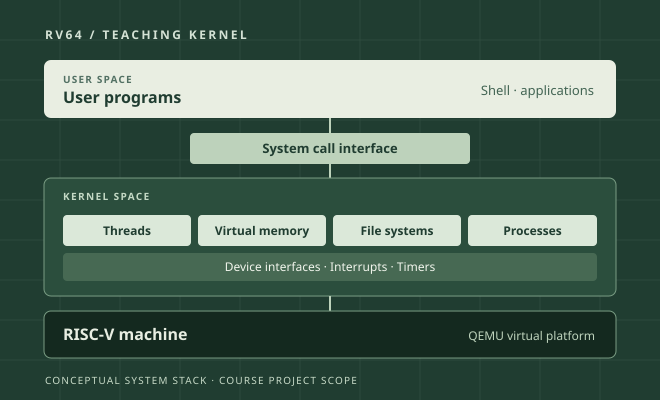

Engineering portfolio · UIUC
Chuheng
(Arnold) Tao.
I study computer engineering and enjoy building systems where algorithms, software and hardware meet. This is a collection of my projects, experiments and notes along the way.
Selected projects
07 projects / 2022–2026

2 real hardware demo videos01A — ECE 385 · Digital Systems Laboratory
Gesture-controlled Flappy Bird
A dual-FPGA embedded vision system, from camera capture and JPEG decoding to fixed-point neural inference and real-time HDMI graphics.
Watch both demos (25 s + 15 s) · Read case study ↗
Individual FPGA prototype · 202601B — Related FPGA project · Individual exploration
Hardware-accelerated JPEG decoding
Adapting an open-source Verilog decoder for AXI DMA, RGB565 framebuffers and HDMI video output. A separate hardware integration prototype developed alongside the gesture-controlled game.
Play the simulated camera-feed comparison ↗
33.15% validation mIoU · 202505 — ECE 364 · Individual project
Semantic segmentation on PASCAL VOC
Building a PyTorch segmentation pipeline and comparing training strategies: synchronized data augmentation, weighted cross-entropy plus Dice loss, and adaptive scheduling. The final model achieved 3.07× the baseline validation mIoU in my experiments.
Explore results, learning curves and predictions ↗
10 µm-pitch calibration target · 202504 — Personal project · Optical instrumentation
Laser scanning microscope
Repurposing a Blu-ray optical pickup into a scanning microscope: optics, analog readout, motion control and image reconstruction. Explore real calibration scans, styrofoam texture and a rotating 3D visualization of onion-cell contours.
Watch both demos · Inspect experimental images ↗
Independent bench experiment · February 202502 — Personal project · Mechatronics
Piezoelectric stick–slip actuator
Creating linear motion without a rotary motor by combining a piezoelectric element, sawtooth excitation, an audio amplifier, magnetic forces and a ball-bearing slider.
Read the experiment · 8 demos + animation ↗
Independent project · 2022 / 202603 — Curiosity project · Applied mathematics
The geometry of absolute error
In 2022, I independently derived a geometric solution to least absolute deviations regression, replacing a grid search with ten candidate intersections for five observations. Revalidated in 2026 with linear programming; explore the original drawings and interactive 3D exploration.
Play with the 2D/3D loss landscape ↗ Personal project · 2025 · Demo video
Personal project · 2025 · Demo video06 — Everyday engineering · Personal project
Solar-powered balcony irrigation
A small solar-powered watering system to keep my plants cared for while I am away in summer, using a water reservoir, tubing and a compact solar panel.
Watch the watering demo · Explore the garden ↗Research & ongoing projects
02 projects / 2026–present
Undergraduate research · 2026–present
Computational MRI
and brain tissue segmentation.
Professor Zhi-Pei Liang’s group
University of Illinois Urbana-Champaign
Ongoing research
I investigate how to delineate white matter reliably in brain MRI, with an emphasis on understanding differences between expert annotations and assessing the anatomical consistency of computational segmentation methods.
My work connects medical image analysis, experimental evaluation, and research on the reliability of automated delineation.
Read about my research contributions ↗
In progress — ECE 391 · Computer Systems Engineering
Unix-like kernel on RISC-V
Building the foundations of an operating system in C and RISC-V assembly, from device I/O and interrupts to threads, virtual memory and process execution. Individual assignments lead into a collaborative kernel project.
Explore the architecture and ongoing work ↗About
How I approach engineering
My interests sit at the intersection of computing systems and image processing. I like to follow a problem all the way from an algorithm to a working implementation and understand what limits its performance.
What this site documents
Project write-ups focus on design decisions, experiments, debugging, and measured outcomes, with clear credit for collaborative work and the open-source tools that make it possible.
Journal & life
Curated personal gallery
 22 cooking photos · 8 life videos
22 cooking photos · 8 life videosPersonal gallery
Life beyond the lab
A more personal side of this portfolio: our cats, miniature models at the Museum of Science and Industry in Chicago, an expanded cooking gallery, kayaking, and quiet moments outdoors.
Explore the culinary and personal galleries ↗